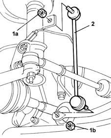

4410C11 front suspension anti-roll bar end anchorage link (one), lh or rh - r r
- Path
- Procedures > 44 SUSPENSION AND WHEELS > 4410 FRONT SUSPENSION > 4410C stabilizer bar and anchorage struts > 4410C11 front suspension anti-roll bar end anchorage link (one), lh or rh - r r
- Kind
- repair procedure (removal / refitting; the operation number is the code)
- Applies to
- all engines; all production periods
- Interactive page
- https://sloeber94.github.io/elrnDB-fMltpl/en/#/2891711
Applies to: all engines; all production periods
 Removing
Removing
 Refitting
RefittingPosition the vehicle on a lift and raise it.
4450B10 Front WHEEL (one) - R.R. .
1. Undo the nut (1a) fixing the anchorage rod to the shock absorber and the nut (1b) fixing it to the anti-roll bar.
2. Remove the anti-roll bar anchorage rod.

Applies to: all engines; all production periods
Refitting
RemovingReposition the rod.
Tighten the nuts fixing the anchorage rod to the shock absorber and to the anti-roll bar to torque.
 | Fastening | Component | Ø | Value (daNm) |
|---|---|---|---|---|
- | Nut | FRONT ANTI-ROLL BAR. ANCHORAGE ROD. | M10 x 1.25 | 6 |
4450B10 Front WHEEL (one) - R.R. .
Lower the left and remove the vehicle.